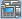
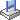

機能説明
Javaリモートバーチャルコンソールを使用することにより、リモートからサーバーにアクセスして管理したり、OSをインストールまたは修復したり、サーバーにドライバーをインストールすることができます統合リモートコンソールは以下の機能をサポートします。
- ローカルPCのキーボードとマウスを使用して、サーバーをリモートで管理できます。
- 仮想フロッピーディスクドライブ（FDD）またはDVD-ROMドライブを使用して、サーバーがネットワーク経由でローカルPCにリモートアクセスできるようにします。サーバーには、仮想フロッピードライブまたは仮想DVD-ROMドライブと物理的なUSBデバイスの使用法方法は同じです。
表 1 KVM画面でのボタンについて説明します。
ボタン |
説明 |
|---|---|
|
ツールバーをロックします。 |
|
ツールバーを非表示にします。 |
|
サーバーのリアルタイムデスクトップを全表面に表示します。 NOTE:
全画面モードからウィンドウモードに切り替えるには、ポインタを全画面の上部に移動するか、Ctrl+Alt+Shiftを押してツールバーを表示し、を押します。 |
|
マウスの位置を同期します。 NOTE:
このボタンは、サーバーデスクトップが全画面で表示され、[マウス操作]が[シングルマウス]の場合、[マウスモードを変更]をクリックした後にのみ利用できます。 |
|
マウスモードを変更します。 NOTE:
このボタンは、サーバーデスクトップが全画面で表示され、[マウス操作]が[シングルマウス]の場合にのみ利用できます。 |
|
ウィンドウモードでサーバーデスクトップに戻ります。 NOTE:
このボタンは、サーバーデスクトップが全画面モードで表示されている場合にのみ、ツールバーで使用できます。 |
|
電源制御メニューが表示されます。このメニューには、次のものが含まれます。
|
 |
リモート操作をリアルタイムに録画します。 |
|
サーバーマウスを制御します。制御操作には、次のものが含まれます。
デフォルトの設定マウス高速化 NOTE:
|
|
仮想DVD-ROMドライブを選択して使用します。 NOTE:
仮想DVD-ROMドライブと仮想FDDは複合デバイスです。仮想DVD-ROMドライブがサーバーに接続されている場合、サーバーはメディアのない仮想FDDも認識します。通常の操作方法に従って、仮想FDDが使用できます。 |
 |
仮想FDDを選択して使用します。 NOTE:
仮想DVD-ROMドライブと仮想FDDは複合デバイスです。仮想FDDがサーバーに接続されている場合、サーバーはメディアのない仮想DVD-ROMドライブも認識します。通常の操作方法に従って、仮想DVD-ROMドライブが使用できます。 |
|
DVD-ROMドライブまたはFDDを使用してイメージファイルを作成します。 |
|
組み合わせキーを送信またはカスタマイズします。組み合せキーとその意味は以下のとおりです。
NOTE:
組み合わせキーとその機能は、オペレーティングシステムによって異なります。ここで説明する組み合わせキーとその機能はWindows専用です。 |
|
クライアントキーボードをカスタマイズします。デフォルトでは、BMCはクライアントのキーボードレイアウトに自動的に適用します。キーボードの自動適用モードが理想的でない場合は、ターゲットのキーボードレイアウトを強制的に指定してください。
|
Image Clarity |
サーバーデスクトップの画像の明瞭度を調節します。 |
|
Num Lockの状態を示します。 |
|
Caps Lockの状態を示します。 |
|
Scroll Lockの状態を示します。 Linuxキャラクタモードに入った後、Ctrl+Sを誤って押すと、画面がロックされます。Scroll Lockを押して画面のロックを解除します。 NOTE:
|
|
オンラインヘルプ情報を表示します。 |
備考:リモートバーチャルコンソール画面上のボタンとその機能は、サーバーモデルによって異なります。 |
|


画面の説明
メインメニューからリモートコンソールを選択し、Java統合リモートバーチャルコンソール(共有モード)またはJava統合リモートバーチャルコンソール(専用モード)をクリックします。
KVM画面が表示されます。

Java統合リモートバーチャルコンソール(共有モード)をクリックすると、2人のユーザーがサーバーに同時にアクセスして操作を実行できます。各ユーザーが他のユーザーが実行した操作を表示することができるため、セキュリティリスクが発生する可能性があります。
表 2エリアを説明します。
組み合わせキーの送信
- KVM画面で、ツールバーにあるをクリックします。
組み合せキーのダイアログボックスが表示されます。
- 組み合わせキーをクリックします。
サーバーは組み合せキーに対応する操作を実行します。
組み合わせキーをカスタマイズする場合は、カスタムの横にあるテキストボックスにキーを入力し、送信をクリックします。
クライアントキーボードレイアウトの指定
KVM画面で、ツールバーにある をクリックし、使用するキーボードを選択します。
をクリックし、使用するキーボードを選択します。
DVD-ROMドライブのマウント
ローカルPCのDVD-ROMドライブをサーバーにマウントします。
- KVM画面で、ツールバーにある
 をクリックします。
をクリックします。
- CD/DVDを選択します。
- ドロップダウンリストからローカルPCのDVD-ROMドライブのドライブ文字（例:G:）を選択します。
- 接続をクリックします。
ローカルPCのDVD-ROMドライブをサーバーにマウントします。
DVD-ROMドライブをアンマウントするには、切断をクリックし、表示された確認ダイアログボックスではいをクリックします。
仮想DVD-ROMドライブによるイメージファイルのロード
DVD-ROMドライブをローカルPCにマウントし、ローカルPCからサーバーにイメージファイルをロードします。
- KVM画面で、ツールバーにあるをクリックします。
- イメージファイルを選択します。
- 参照をクリックします。
開くダイアログボックスが表示されます。
- ローカルPCでイメージファイルを選択し、開くをクリックします。
- 接続をクリックします。
仮想DVD-ROMドライブがサーバーに正常にマウントされ、イメージファイルが正常にロードされます。
- 別のイメージファイルをロードするには、イジェクトをクリックして既存のDVDイメージファイルをイジェクトしてから、新しいDVDイメージファイルを選択し、挿入をクリックします。
- 仮想DVD-ROMドライブをアンマウントするには、切断をクリックします。次に、確認ダイアログボックスではいをクリックします。
仮想FDDのマウント
ローカルPCのFDDをサーバーにマウントします。
- KVM画面で、ツールバーにあるをクリックします。
- フロッピーを選択します。
- ドロップダウンリストからローカルPCのFDDのドライブ文字（例:A:）を選択します。
- ライトプロテクトのチェックボックスを選択します。
ライトプロテクトは、重要なデータの改ざんや消去を防止するメカニズムです。ライトプロテクトが選択されている場合、指定されたFDDにデータを書き込むことはできません。
- 接続をクリックします。
FDDはサーバーにマウントされています。
FDDをアンマウントするには、切断をクリックします。次に、確認ダイアログボックスではいをクリックします。
仮想FDDによるイメージファイルのロード
ローカルPCのFDDをマウントし、ローカルPCからサーバーにイメージファイルをロードします。
マウントするイメージファイルのサイズは1.44 MBである必要があります。それ以外の場合、マウントできません。
- KVM画面で、ツールバーにあるをクリックします。
- イメージファイルを選択します。
- 参照をクリックします。
開くダイアログボックスが表示されます。
- ローカルPCでイメージファイルを選択し、開くをクリックします。
- 接続をクリックします。
イメージファイルがサーバーに正常にロードされました。
- 別のイメージファイルをロードするには、イジェクトをクリックして既存の仮想FDDをイジェクトしてから、新しいイメージファイルを選択し、挿入をクリックします。
- 仮想FDDをアンマウントするには、切断をクリックします。次に、確認ダイアログボックスではいをクリックします。
イメージファイルの作成
フロッピードライブにあるフロッピーディスクまたはDVD-ROMドライブにあるDVD-ROMを使用してイメージファイルを作成します。作成されたイメージファイルはローカルPCに保存されます。
この操作を実行する前に、ローカルPCのフロッピードライブにあるフロッピーディスクまたはDVD-ROMドライブにあるDVD-ROMが挿入されていることを確認してください。
- KVM画面で、ツールバーにある
 をクリックします。
をクリックします。
- ドライバーのドロップダウンリストからローカルPCのFDDまたはDVD-ROMドライブのドライブ文字を選択します。
- 参照をクリックします。保存ダイアログボックスが表示されます。
- イメージファイルを保存するディレクトリを指定し、ファイル名テキストボックスにイメージファイル名を入力します。
システムは、*.iso形式のDVD-ROMイメージファイルと、*.img形式のFDDイメージファイルをサポートします。
- 保存をクリックします。
- 作成をクリックします。
進捗は、イメージファイル作成の進行状況を示します。
イメージファイルの作成を停止するには、停止をクリックします。
仮想ディレクトリのマウント
ローカルPC上のディレクトリをサーバーにマウントします。これにより、サーバーが読み込み専用モードでローカルディレクトリにアクセスできます。

ディレクトリをマウントする前に、必要なファイルをディレクトリにコピーします。ディレクトリがマウントされた後、ディレクトリにファイルを追加することも、ファイルを削除することもできません。
- KVM画面で、ツールバーからをクリックします。
- ディレクトリオプションボタンをクリックします。
- 参照をクリックします。
ローカルディレクトリを選択するダイアログボックスが表示されます。
- ディレクトリを選択し、開くをクリックします。
- 接続をクリックします。
- 接続に成功すると、仮想ディレクトリがサーバーOSリストに表示されます。このディレクトリからファイルをコピーできます。
- 仮想ディレクトリをアンマウントするには、切断をクリックします。
サーバーの電源投入
- KVM画面で、ツールバーにある
 をクリックし、メニューから電源ONを選択します。
をクリックし、メニューから電源ONを選択します。確認ダイアログボックスが表示されます。
- はいをクリックします。
サーバーノードの電源がオンになっています。
電源投入時間がサーバー構成によって異なります。
サーバーの電源切断
- サーバーの電源を切断する前に、すべてのサービスが停止していることを確認してください。
- 必要に応じて電源OFFモードを選択してください。電源OFFモードの違いについては、BMCユーザーガイドのを参照してください。
- KVM画面で、ツールバーにあるをクリックし、メニューから電源OFFを選択します。
確認ダイアログボックスが表示されます。
- はいをクリックします。
デバイスの電源がオフになっています。
サーバーの強制的なリセットまたは電源の再投入
- 強制的なリセットまたは電源サイクルにより、ユーザープログラムまたは未保存のデータが破損する可能性があります。
- システムを強制的にリセットするか、サーバーの電源を強制的に最投入する前に、サービスリスクが存在しないことを確認してください。
- サービス要件に基づいて、リセットモード（システム強制リセットまたは強制電源サイクル）を選択します。2つのモードの違いについては、BMCユーザーガイドのを参照してください。
- KVM画面で、ツールバーにあるをクリックし、メニューからシステム強制リセットまたは強制電源サイクルを選択します。
確認ダイアログボックスが表示されます。
- はいをクリックします。
サーバーはリセットを開始するか、電源をオフにしてから再びオンにします。
リセットまたは電源サイクルの期間は、サーバーの設定によって異なります。
マウスとキーのリセット
サーバーデスクトップ上のキーボードとマウスが応答しないときに、USBキーボードとマウスの取り外しと取り付けをシミュレートします。
- KVM画面で、ツールバーにある
 をクリックし、メニューからマウスとキーのリセットを選択します。
をクリックし、メニューからマウスとキーのリセットを選択します。確認ダイアログボックスが表示されます。
- はいをクリックします。
USBキーボードとマウスがリセットされます。
サーバーデスクトップのビデオの録画
リモート仮想コンソールに表示されているデスクトップのビデオを記録します。
- KVM画面で、ツールバーにあるをクリックします。
確認ダイアログボックスが表示されます。
- はいをクリックします。
保存ダイアログボックスが表示されます。
- 録画するビデオファイルを保存するディレクトリを選択し、ファイル名テキストボックスにファイル名を入力します。
- 保存をクリックします。
KVM画面が表示され、ビデオ録画が開始されます。
- ビデオ録画が完了した後、
 をクリックします。
をクリックします。確認ダイアログボックスが表示されます。
- はいをクリックします。
ビデオファイルが指定されたディレクトリに保存されます。
ビデオファイルは.repファイルです。再生画面でビデオファイルを再生できます。
シングルマウスの使用
ローカルPCのマウスがサーバーデスクトップと同期していない場合は、シングルマウス機能を使用してローカルPC上のマウスを非表示にし、サーバーデスクトップのマウスのみを表示します。
- KVM画面で、ツールバーにあるをクリックし、メニューからシングルマウスを選択します。
確認ダイアログボックスが表示されます。
- はいをクリックします。
サーバーデスクトップ上のマウスのみがKVM画面に表示されます。
リモートマウスの高速化
サーバーデスクトップ上のマウスを高速化し、ローカルPCのマウスと同期させます。
- KVM画面で、ツールバーにある
 をクリックし、メニューからマウス高速化を選択します。
をクリックし、メニューからマウス高速化を選択します。確認ダイアログボックスが表示されます。
- はいをクリックします。
サーバーマウスはローカルPC上のマウスと同期しています。